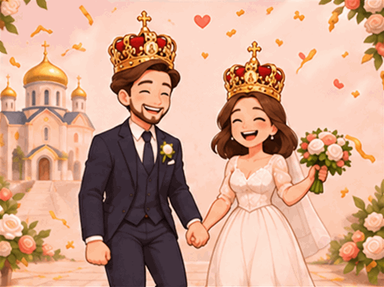

Тайна Венчания · Das Mysterium der Trauung
Für zwei Menschen, ein gemeinsames Leben
Zwei Herzen.
Ein Weg.
Eure gemeinsame Reise hat begonnen. Vor euch liegen vier kleine Fragen über die Ehe im orthodoxen Glauben. Löst sie gemeinsam.
Vier Fragen · Kein Zeitlimit
Frage 1 von 4
Vier von vier Fragen gelöst
Eurer glücklichen Ehe steht nichts mehr im Weg!

Auf Liebe, Treue und Gottes Segen.
Möge Christus euch auf eurem gemeinsamen Weg begleiten – in Freude, Geduld und gegenseitiger Hingabe.
Многая лета! ♡